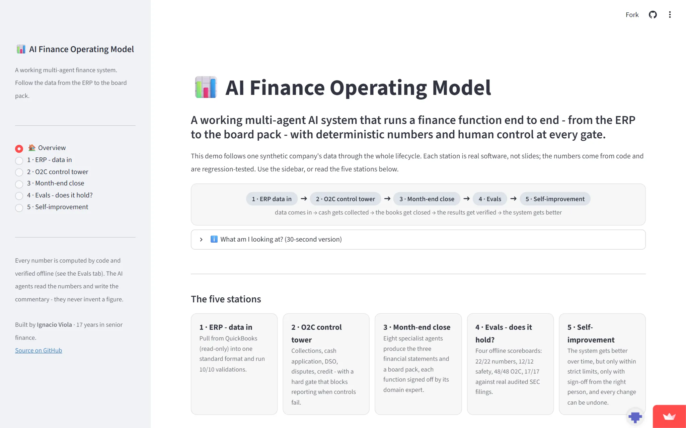

Multi-agent CFO office · Reference buildOficina del CFO multiagente · Build de referencia
AI Finance Engineering
A multi-agent CFO office — Controller, Treasury, Accounting, FP&A and Controls, plus an independent Audit agent — over a shared, auditable state with maker-checker review. The deterministic math is validated against real public filings. Una oficina del CFO multiagente — Controller, Treasury, Contabilidad, FP&A y Controles, más un agente de Auditoría independiente — sobre un estado compartido y auditable con revisión maker-checker. La matemática determinista se valida contra reportes públicos reales.

The problemEl problema
Finance operations demand deterministic accuracy: numbers must be correct, auditable and governed. General-purpose AI can't reliably produce financial figures without oversight — so how do you prove an agentic finance system is actually trustworthy?Las operaciones financieras exigen precisión determinista: los números deben ser correctos, auditables y gobernados. La IA de propósito general no puede producir cifras financieras confiables sin supervisión — entonces, ¿cómo se demuestra que un sistema financiero agéntico es realmente confiable?
The approachEl enfoque
A CFO orchestrator coordinates the month-end close, an order-to-cash control tower, and a self-improvement loop under unified governance — maker-checker sign-off, audit trails and hard reporting gates. The system reads from a canonical data layer that abstracts vendor systems, so ERP sources are swappable.Un orquestador CFO coordina el cierre de mes, una torre de control order-to-cash y un loop de auto-mejora bajo gobernanza unificada — sign-off maker-checker, auditoría y compuertas duras de reporting. El sistema lee de una capa de datos canónica que abstrae los sistemas vendor, así las fuentes ERP son intercambiables.
Agents & governanceAgentes y gobernanza
- Eight specialist agents: Controller, Treasury, Administration (AR/AP/Tax), Accounting & Reporting, FP&A, Strategic Finance, Internal Controls and an independent Audit agent.Ocho agentes especialistas: Controller, Treasury, Administración (AR/AP/Impuestos), Contabilidad y Reporting, FP&A, Finanzas Estratégicas, Controles Internos y un agente de Auditoría independiente.
- Each domain expert signs off first; the CFO gives final consolidated approval. Two agents act as sub-orchestrators — real two-level governance.Cada experto de dominio firma primero; el CFO da la aprobación consolidada final. Dos agentes actúan como sub-orquestadores — gobernanza real de dos niveles.
MCP connectorConector MCP
A Model Context Protocol server exposes the finance system of a multi-entity SaaS (6 legal entities, 6 currencies) as callable tools: consolidated P&L, balance sheet, AR aging and cash position, with multi-currency consolidation at period-close FX.Un servidor Model Context Protocol expone el sistema financiero de un SaaS multi-entidad (6 entidades legales, 6 monedas) como herramientas invocables: P&L consolidado, balance, AR aging y posición de caja, con consolidación multi-moneda al FX de cierre.
Verified outcomeResultado verificado
17 of 17 figures tie to dLocal's (NASDAQ: DLO) public filings — 17 PASS, 0 FAIL, with no LLM involvement in the math.17 de 17 cifras atan a los reportes públicos de dLocal (NASDAQ: DLO) — 17 PASS, 0 FAIL, sin intervención del LLM en la matemática.
Deterministic statement-level math reconciled to reported FY2024/FY2025 consolidated numbers (IFRS, USD).Matemática determinista a nivel de estados conciliada con los números consolidados reportados FY2024/FY2025 (IFRS, USD).